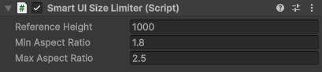

Smart UI Size Limiter component
Limits the size of the Rect Transform to assigned min and max aspect ratios.

| Field | Description |
|---|---|
| Reference Height | Height that is set to Rect Transform and used to calculate width for current aspect ratio. Cant be lower or equal to 0. |
| Min Aspect Ratio | Minimum limit for aspect ratio. For unlimited min aspect ratio - set the value to 0. |
| Max Aspect Ratio | Maximum limit for aspect ratio. For unlimited max aspect ratio - set the value to 0. |
How it works
Smart UI Size Limiter component depends on parent Rect Transform. It uses the parents Rect Transform size to calculate the appropriate aspect ratio of Smart UI Size Limiter Rect Transform. If parents size is between the allowed min and max aspect ratios then the full parents size will be occupied, otherwise it will be limited.
Note
Smart UI Size Limiter component can work without UI Scaler in parent hierarchy.